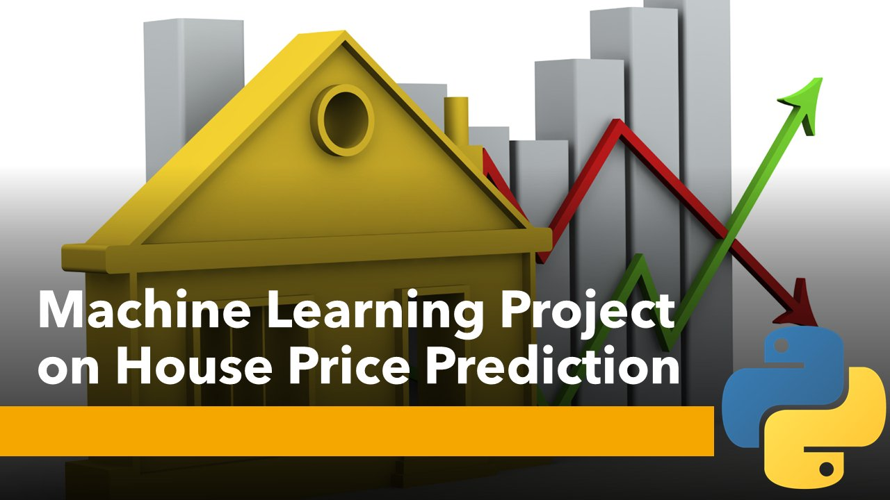
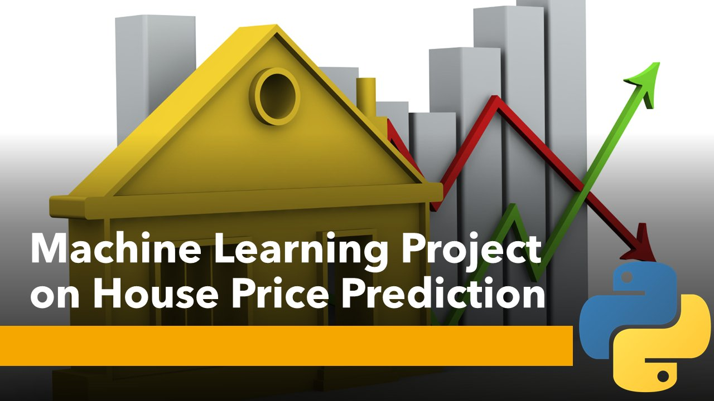
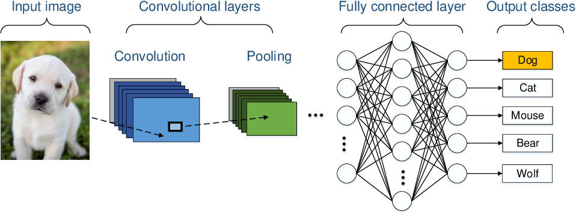

In this project, I utilized advanced data analysis techniques and programming skills to conduct an extensive analysis of Indian startup funding from 2018 to 2021. By leveraging Python and its popular libraries including pandas, NumPy, Matplotlib, seaborn, and SciPy, I explored funding patterns, sector-wise distribution, geographical impact, trends over time, and correlations between factors.
 

In this project, I developed a machine learning algorithm to predict house prices based on various home features, utilizing the California Housing Dataset. Through this project, I gained hands-on experience in regression analysis and building predictive models for real estate pricing.

In this project, I applied a machine learning classification approach to predict customer churn in a telecommunications company. Using the Cross-Industry Standard Process for Data Mining (CRISP-DM) framework, I performed data exploration, handled missing values, engineered relevant features, developed a predictive model, evaluated its performance, interpreted the results, and optimized the model through hyperparameter tuning.

In this ongoing regression project, I focus on time series forecasting to predict store sales. By following a structured methodology that includes data exploration, preparation, time series analysis, model selection and training, evaluation, and deployment, the goal is to build a reliable forecasting model. The project aims to provide accurate predictions to optimize inventory management, plan promotions, and enhance overall sales performance for Corporation Favorita.

In this project, I implemented an image classification system using pre-trained Convolutional Neural Network (CNN) models (VGG, AlexNet, and ResNet). The project aimed to accurately classify images into categories such as dogs, breeds of dogs, and non-dogs. I developed a pipeline to load and preprocess the images, passing them through the trained models to generate predictions. Through this project, I gained skills in image classification, model evaluation, and implementing CNN architectures for real-world applications.

As a passionate learner, I developed the YouTube Playlist Organizer to simplify the organization of my YouTube playlists. By utilizing an API, this tool categorizes videos, allowing me to easily track my progress and access specific content within the playlist. With the YouTube Playlist Organizer, I streamline my learning journey by automating the process of organizing videos based on their subjects. This tool enhances my learning experience and maximizes the value of large YouTube playlists.